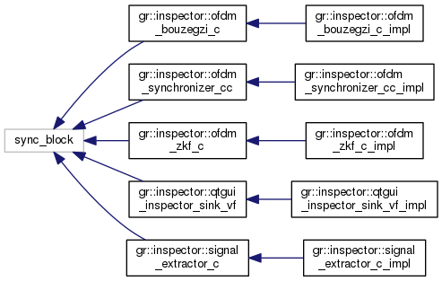
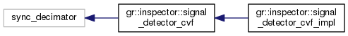
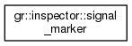
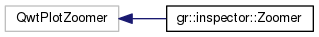

The Inspector
GNU Radio Signal Analysis Toolbox gr-inspector
Class Hierarchy
Go to the textual class hierarchy




Generated on Thu Aug 25 2016 14:16:38 for The Inspector by
1.8.11

 1.8.11
1.8.11